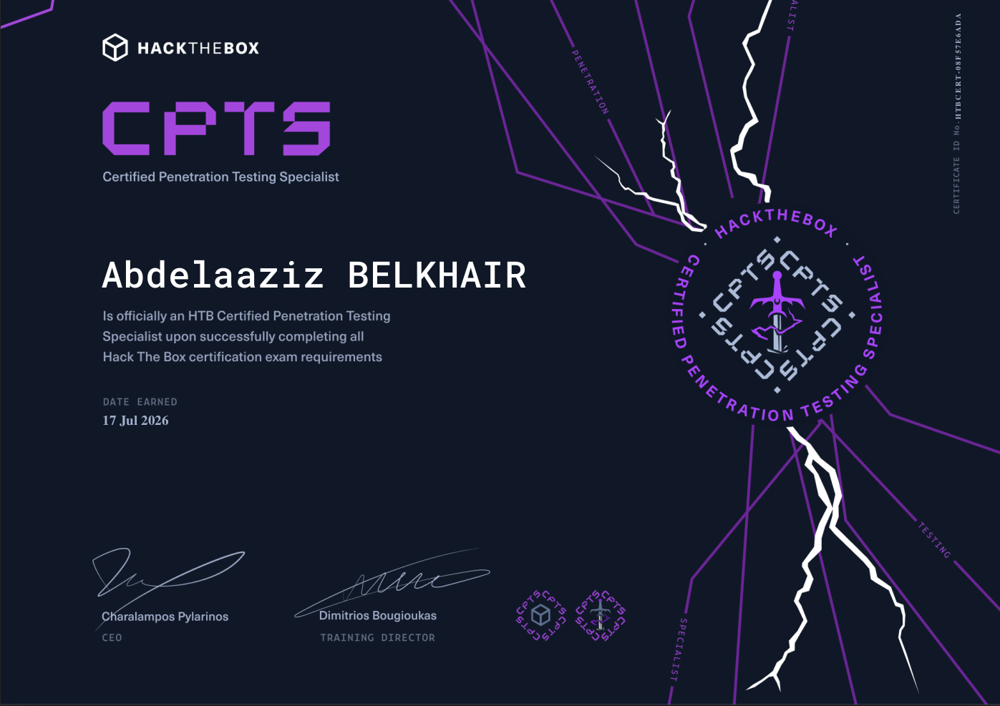

ntds2bh
Analyser une base Active Directory hors-ligne (le fameux ntds.dit) et en
sortir des JSON prêts pour BloodHound, pour étudier les chemins de privilèges sans
toucher au domaine.
ADBloodHound
Je fais du pentest Web et Active Directory, en ce moment en stage chez Orange Cyberdefense. Ici, mes outils, mes writeups et ce que j'apprends au passage.
Je suis élève-ingénieur en cybersécurité à l'ENSEIRB-MATMECA, en stage de fin d'études chez Orange Cyberdefense.
Ce qui me plaît le plus, c'est de partir d'un accès de rien du tout et de remonter, bout par bout, jusqu'au contrôle du domaine, puis de bien le raconter dans un rapport. J'écris pas mal d'outils pour aller plus vite sur l'AD, et je documente mes chaînes d'attaque avec les impasses, pas seulement le chemin qui a fini par marcher.
J'apprends surtout en pratiquant, sur HackTheBox et TryHackMe. Je garde aussi un pied du côté maths et crypto, un reste de prépa.
Je cherche un CDI en pentest à partir de septembre 2026, en Web comme en Active Directory.
Analyser une base Active Directory hors-ligne (le fameux ntds.dit) et en
sortir des JSON prêts pour BloodHound, pour étudier les chemins de privilèges sans
toucher au domaine.
Un générateur de labs Active Directory en PowerShell, piloté par de simples fichiers JSON : utilisateurs, groupes, machines et scénarios d'attaque. Je m'en sers pour rejouer des situations vues en mission.
Un fork de PyWSUS pour mes labs : WSUS en HTTP, capture NTLM, relais et émission de certificats via AD CS.
Transformer un relais NTLM-vers-HTTP réussi en session de navigateur : je garde le socket authentifié vivant et je route le trafic via une passerelle SOCKS locale pour naviguer sous l'identité relayée.
Kerbrute revu à ma sauce, en Go : transport SOCKS5 et mode discret (jitter, anti-lockout, circuit breaker, downgrade RC4 pour l'AS-REP roasting).
J'écris des writeups détaillés, avec les hypothèses et les impasses, pas seulement le chemin qui a fini par marcher.
Share en écriture, capture NetNTLMv2, Shadow Credentials et AD CS ESC16 jusqu'à Administrator.
SMB null, spray, BloodHound, dump gMSA et AD CS ESC4 jusqu'à Administrator.
Client-Side Desync, XSS persistant, path traversal et console Werkzeug jusqu'à RCE.
Mass assignment, pollution de prototype et gadget template pour exécuter côté serveur.
Je note aussi ce que j'apprends, souvent après une machine ou une mission.
Kerberoasting, délégation, Shadow Credentials, gMSA et AD CS.
Certipy, de ESC1 à ESC16.
Primitives et points de rupture pour sortir d'un conteneur.
Mon côté crypto, avec l'attaque Kipnis-Shamir et un comparatif NIST.
Pentest web : recherche de vulnérabilités, exploitation, validation d'impact et
rédaction des constats. C'est là que j'ai écrit ntds2bh.
Moteur SAST hybride : analyse statique, CodeBERT, Phi et détection OWASP.
Ingénieur télécoms, spécialité sécurité, crypto et réseaux.
Maths et physique intensives.
AD, web et chaînes multi-étapes. Profils : HackTheBox et TryHackMe.

HackTheBox

TryHackMe

TryHackMe

TryHackMe

Niveau C1
Le plus simple, c'est par email. On peut aussi se croiser ici.
Je cherche un CDI en pentest à partir de septembre 2026, en Web comme en Active Directory.
M'écrire